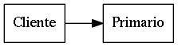

Despliegues tipo
Standalone

Replica Set
- Máximo 1 primario
- Máximo 11 secundarios
- Escrituras solo en primario
- Se pueden hacer lecturas conectándose a un secundario

Sharded cluster
A través del config server se sabe a que replicaSet (shard) se puede escribir/leer Config servers posibles:
- 1 - Usado para pruebas
- 3 - Usado para producción. Provee tolerancia a fallos